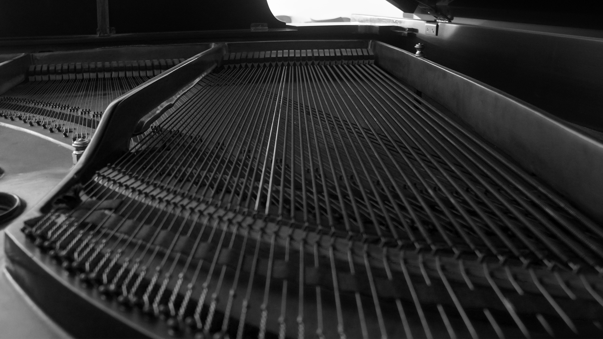

Above is my first cropped image. I added a hue of orange to match the theme of firefighting and add more drama to the photo. I also changed the dimensions of the photo from landscape to 5"x7".
Above is my second cropped image. I shot this photo in landscape but made sure that the dimensions were 1920 by 1080p. As I mentioned before, the photo was compelling because of the piano strings. I made the photo black and white to, again, add to the drama.